Dokumentacja aplikacji KRS 2.0
1. Podstawowe za³o¿enia Krajowego Rejestru S¹dowego
Podstawowym za³o¿eniem KRS-u jest wzmocnienie pewnoœci obrotu poprzez stworzenie jednolitego, centralnego rejestru, który wywo³uje okreœlone skutki prawne zarówno dla przedsiêbiorców jak i uczestników obrotu.
Z perspektywy w³adz pañstwowych KRS jest filtrem, który ma przynajmniej z za³o¿enia, nie dopuœciæ do dzia³ania nieuczciwych przedsiêbiorców czy zak³adania fikcyjnych spó³ek. Ponadto sprzyja rozwojowi gospodarczemu zapewniaj¹c przejrzystoœæ informacji dotycz¹cych podmiotów bior¹cych udzia³ w obrocie gospodarczym i równe warunki dostêpu do rejestru.
Je¿eli chodzi o przedsiêbiorców to poprzez wpis do rejestru zyskuj¹ swój statut, a dane dotycz¹ce ich spó³ki s¹ dostêpne publicznie. Pojawienie siê podmiotu w wyszukiwarce KRS œwiadczy o tym, ¿e spe³ni³ okreœlone prawem wymagania i jesteœmy w stanie sprawdziæ, miêdzy innymi: jego NIP, REGON (je¿eli wczeœniej ich nie posiadaliœmy), dok³adny adres, datê wpisu do KRS, organy reprezentacji, przedmiot dzia³alnoœci. Ponadto mo¿emy sprawdziæ informacjê w dziale 4 na temat zaleg³oœci i wierzytelnoœci tego podmiotu i zweryfikowaæ czy chcemy wspó³pracowaæ z danym przedsiêbiorc¹, b¹dŸ podj¹æ u niego zatrudnienie.
Informacje dodatkowe, których nie sprawdzimy w KRS, a które mog¹ okazaæ siê przydatne przy weryfikacji danego podmiotu s¹ dostêpne na stronie: http://przeswietl.pl Mo¿emy tam sprawdziæ m.in wszystkie firmy znajduj¹ce siê pod danym adresem, powi¹zania jakie ma dana firma, czy historiê jej dzia³alnoœci.
G³ówne zasady KRS
Zgodnie z teori¹ profesora Kidyby mo¿na wyró¿niæ piêæ zasad w oparciu, o które funkcjonuje KRS :
1. Jawnoœæ – dziêki tej zasadzie ka¿dy ma prawo dostêpu do danych zawartych w rejestrze za poœrednictwem Centralnej Informacji oraz ma prawo otrzymywaæ drog¹ elektroniczn¹ poœwiadczone odpisy, wyci¹gi, zaœwiadczenia i informacje z Rejestru.
2. Domniemanie znajomoœci treœci wpisu – ta zasada wi¹¿e siê z zasad¹ jawnoœci. Oznacza, ¿e od dnia og³oszenia wpisu w Monitorze S¹dowym nie mogê zas³aniaæ siê nieznajomoœci¹ og³oszonych wpisów.
3. Domniemanie prawdziwoœci i zasady dobrej wiary – jest to doœæ prosta i logiczna zasada, która pozwala mi zak³adaæ, ¿e dane które znajdujê w rejestrze s¹ prawdziwe.
4. Ka¿dy podmiot zarejestrowany w KRS otrzymuje swój unikatowy numer ( za wyj¹tkiem wpisu do rejestru d³u¿ników niewyp³acalnych).
(Joanna Kosterska - Absolwentka prawa Uniwersytetu Wroc³awskiego)
KRS s³u¿y tak¿e jako skuteczne narzêdzie windykacyjne. W szczególnoœci dziêki informacjom zawartym w KRS mo¿emy ustaliæ, czy okreœlona osoba jest wspólnikiem spó³ki, jej akcjonariuszem lub wchodzi w sk³ad organów takiego podmiotu. Dane te stanowi¹ cenne Ÿród³o informacji dla wierzyciela. Ponadto w przypadku, gdy d³u¿nik nie ma maj¹tku lub go skutecznie ukrywa, istnieje mo¿liwoœæ wpisania takiego d³u¿nika do rejestru d³u¿ników niewyp³acalnych co tak¿e ma silne oddzia³ywanie na takiego d³u¿nika.
(Jaros³aw Olejarz SerwisPrawa.pl)
2. Opis aplikacji
KRS 2.0 jest aplikacj¹ umo¿liwiaj¹ca wyœwietlanie szczegó³owych danych dotycz¹cych organizacji zarejestrowanych w Krajowym Rejestrze S¹dowym przedstawionych poni¿ej.
- Wyœwietlanie organizacji zarejestrowanych w KRS (z podzia³em na województwa)
- Wyœwietlanie informacji o organizacji (NIP, KRS, adres, nazwê, itp.)
- Podzia³ na typ formy prawnej (organizacja biznesowa, pozarz¹dowa, samodzielne publiczne zak³ady opieki zdrowotnej)
-
- Wyœwietlanie listy za³o¿ycieli organizacji
- Wyœwietlanie listy osób pe³ni¹cych nadzór nad organizacj¹
- Wyœwietlanie listy wspólników firmy
- Monitorowanie emisji akcji organizacji
- Wyœwietlanie listy firm, w których organizacja ma udzia³y
- Wyœwietlanie listy oddzia³ów firmy
3. Dzia³anie i obs³uga aplikacji
Po uruchomieniu aplikacji oczom u¿ytkownika ukazuje siê ekran startowy na którym znajduje siê szeœæ przycisków kryj¹cych g³ówne opcje programu.
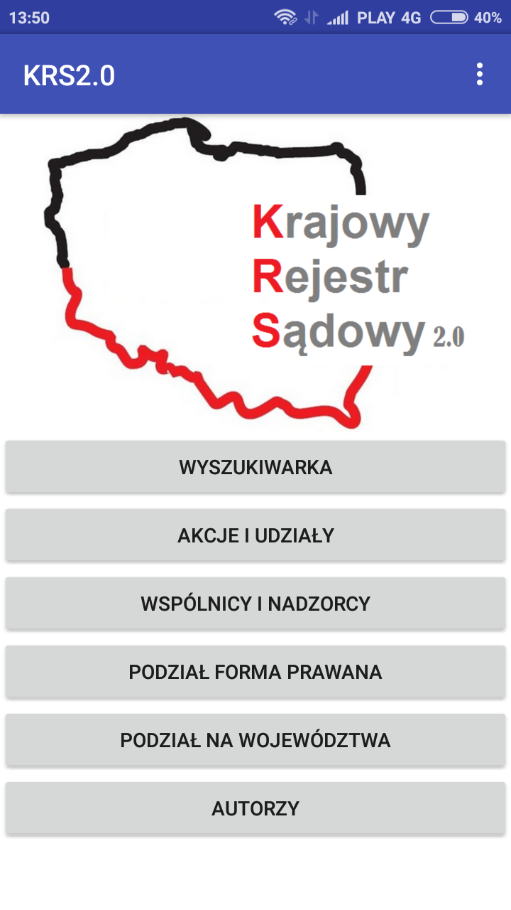
Opcja "WYSZUKIWARKA" pozwala na odnajdywania firm za pomoc¹ ich nazwy lub numeru KRS
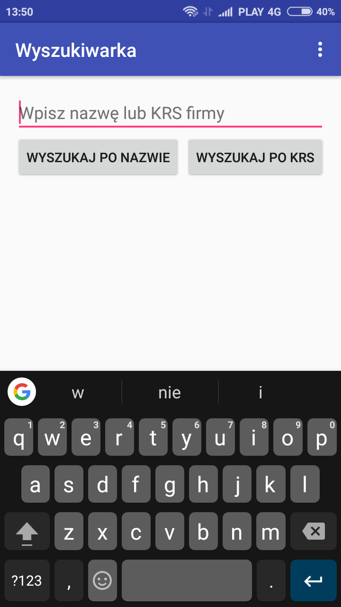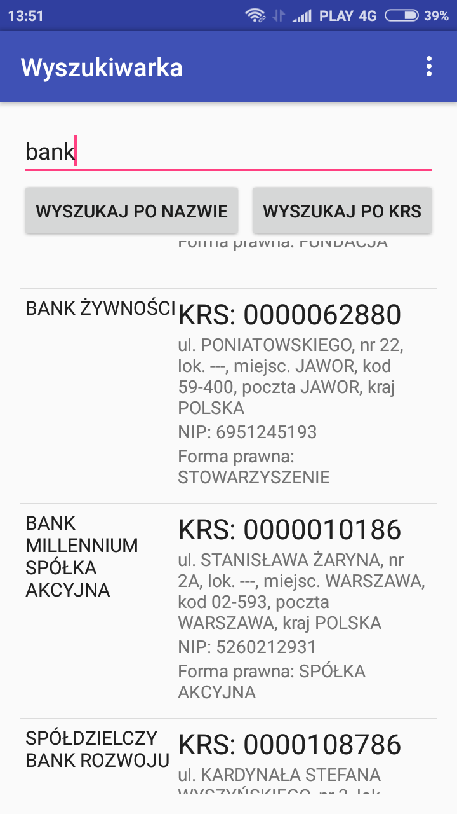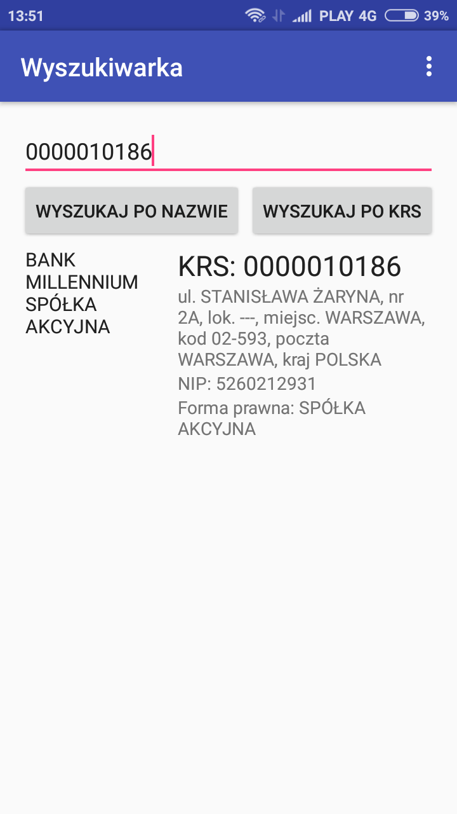
Opcja "AKCJE I UDZIA£Y" pozwala na pozyskanie informacji dotycz¹cy ch AKCJI UDZIA£ÓW oraz ODZDZIA£ÓW wyszukiwanego przedsiêbiorstwa.
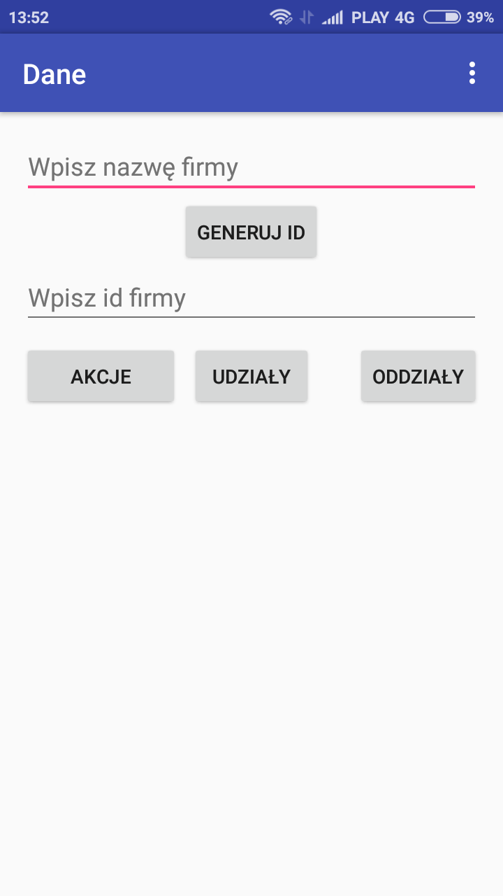
Aby wyœwietliæ ¿¹dane informacje nale¿y wyszukaæ numer ID interesuj¹cego nas przedsiêbiorstwa poprzez wpisanie jego nazwy i klikniêcie przycisku "GENERUJ ID" a nastêpnie przepisanie wyœwietlonego numeru ID we wskazane pole.
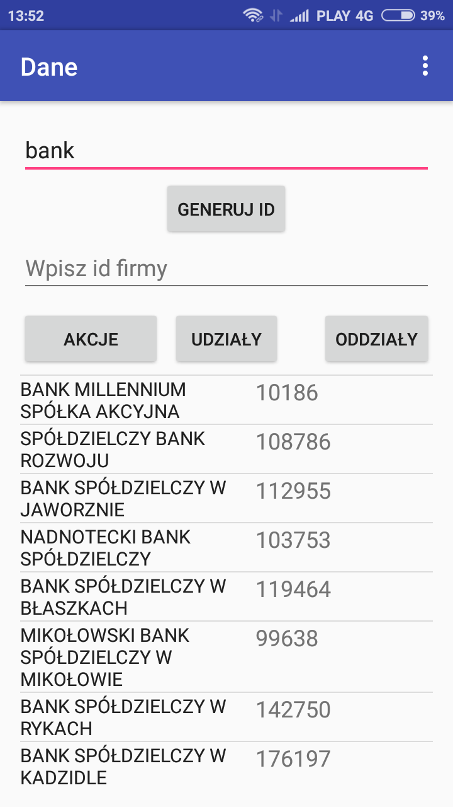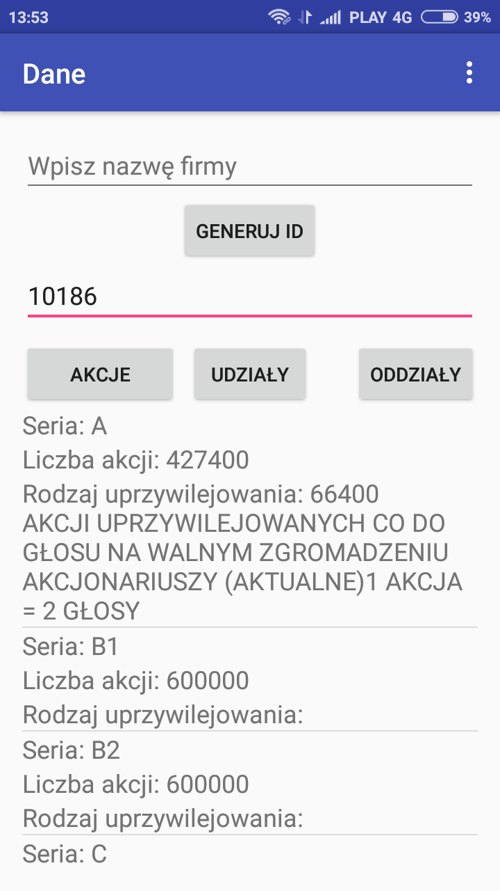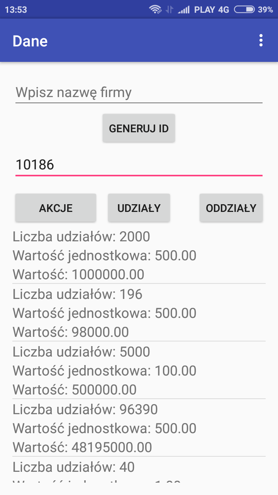
Opcja "Wspólnicy i nadzorcy" jest rozsze¿eniem opcji "AKCJE I UDZIA£Y" wiêc pozyskanie ¿¹danych informacji odbywa siê w sposób analogiczny.
Opcja "PODZIA£ FORMA PRAWNA" wyœwietla przedsiêbiorstwa o danym typie formy prawnej, w podziale na:
1 - Organizacje biznesowe
2 - Organizacje pozarz¹dowe
3 - Samodzielne publiczne zak³ady opieki zdrowotnej
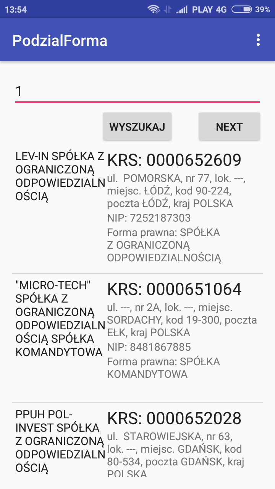
Opcja "PODZIA£ NA WOJEWÓDZTWA" pozwala na wyci¹gniêcie informacji dotycz¹cej firm zarejestrowanych w danym województwie.
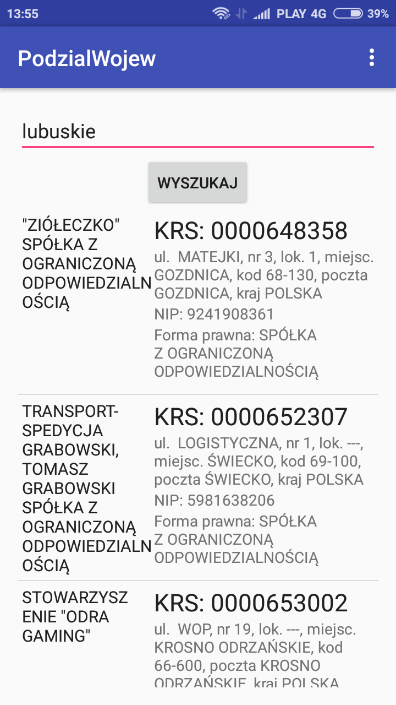
Je¿eli u¿ytkownik aplikacji wprowadzi nieodpowiedni format/frazê/parametr zostanie o tym poinformowany komunikatem.
Ostatnia opcja aplikacji przedstawia informacje o autorach projektu.
4. Opis klas
4.1 Klasa MainActivity
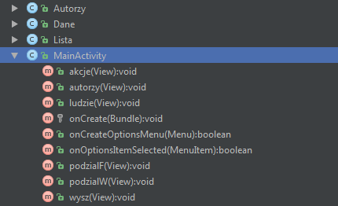
Klasa ta zawiera nastêpuj¹ce metody:
• void akcje(View) - przekierowywuje do klasy Dane
• void autorzy(View) - przekierowywuje do klasy Autorzy
• void ludzie(View) - przekierowywuje do klasy Lista
• void podzialF(View) - przekierowywuje do klasy PodzialForma
• void podzialW(View) - przekierowywuje do klasy PodzialWojew
• void wysz(View) - przekierowywuje do klasy Wyszukiwarka
• void onCreate(Bundle)
• boolean onCreateOptionsMenu(Menu)
• boolean onOptionsItemSelected(MenuItem)
4.2 Klasa Autorzy
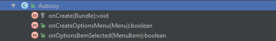
Klasa ta zawiera nastêpuj¹ce metody:
• void onCreate(Bundle)
• boolean onCreateOptionsMenu(Menu)
• boolean onOptionsItemSelected(MenuItem)
4.3 Klasa Dane
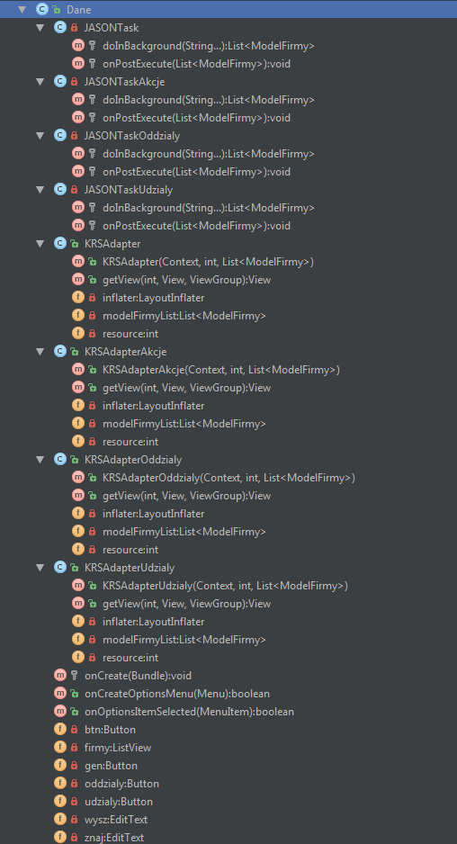
Klasa ta zawiera nastêpuj¹ce metody:
• void onCreate(Bundle)
• boolean onCreateOptionsMenu(Menu)
• boolean onOptionsItemSelected(MenuItem)
Oraz pola:
• Button btn - przycisk s³u¿¹cy do wyœwietlenia akcji firmy
• Button oddzialy - przycisk s³u¿¹cy do wyœwietlenia oddzia³ów firmy
• Button udzialy - przycisk s³u¿¹cy do wyœwietlenia udzia³ów firmy
• Button gen - przycisk s³u¿¹cy do wyœwietlenia ID firmy
• EditText wysz - pole pobieraj¹ce tekst od u¿ytkownika
• EditText znaj - pole pobieraj¹ce tekst od u¿ytkownika
• ListView firmy - lista firm
Klasa zawiera nastêpuj¹ce podklasy:
• JSONTask - odpowiada za pobieranie ID firmy
• JSONTaskAkcje - odpowiada za pobieranie akcji firmy
• JSONTaskOddzialy - odpowiada za pobieranie oddzia³ów firmy
• JSONTaskUdzialy - odpowiada za pobieranie udzia³ów firmy
• KRSAdapter - odpowiada za wyœwietlenie ID firmy
• KRSAdapterAkcje - odpowiada za wyœwietlenie akcji firmy
• KRSAdapterOddzialy - odpowiada za wyœwietlenie oddzia³ów firmy
• KRSAdapterUdzialy - odpowiada za wyœwietlenie udzia³ów firmy
4.4 Klasa Lista
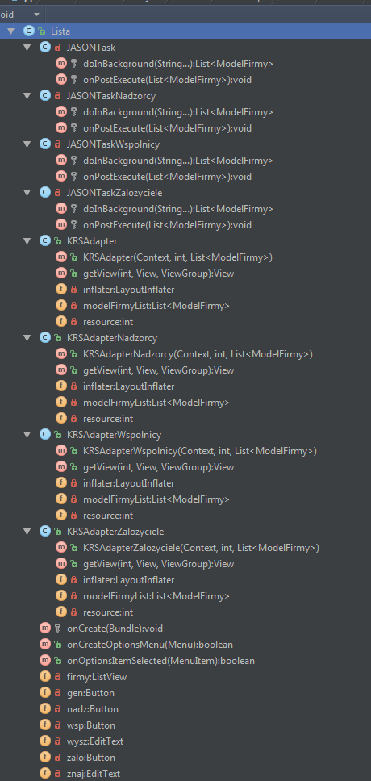
Klasa ta zawiera nastêpuj¹ce metody:
• void onCreate(Bundle)
• boolean onCreateOptionsMenu(Menu)
• boolean onOptionsItemSelected(MenuItem)
Oraz pola:
• Button zalo - przycisk s³u¿¹cy do wyœwietlenia zalozycieli firmy
• Button nadz - przycisk s³u¿¹cy do wyœwietlenia nadzorców firmy
• Button wsp - przycisk s³u¿¹cy do wyœwietlenia wspólników firmy
• Button gen - przycisk s³u¿¹cy do wyœwietlenia ID firmy
• EditText wysz - pole pobieraj¹ce tekst od u¿ytkownika
• EditText znaj - pole pobieraj¹ce tekst od u¿ytkownika
• ListView firmy - lista firm
Klasa zawiera nastêpuj¹ce podklasy:
• JSONTask - odpowiada za pobieranie ID firmy
• JSONTaskZalozyciele - odpowiada za pobieranie nazwisk za³o¿ycieli firmy
• JSONTaskNadzorcy - odpowiada za pobieranie nazwisk nadzorców firmy
• JSONTaskWspolnicy - odpowiada za pobieranie nazwisk wspólników firmy
• KRSAdapter - odpowiada za wyœwietlenie ID firmy
• KRSAdapterZalozyciele - odpowiada za wyœwietlenie nazwisk za³o¿ycieli firmy
• KRSAdapterNadzorcy - odpowiada za wyœwietlenie nazwisk nadzorców firmy
• KRSAdapterWspolnicy - odpowiada za wyœwietlenie nazwisk wspólników firmy
4.5 Klasa PodzialForma

Klasa ta zawiera nastêpuj¹ce metody:
Klasa ta zawiera nastêpuj¹ce metody:
• void onCreate(Bundle)
• boolean onCreateOptionsMenu(Menu)
• boolean onOptionsItemSelected(MenuItem)
Oraz pola:
• Button btn - przycisk s³u¿¹cy do wyœwietlenia firm o danym typie formy prawnej
• Button btnNext - przycisk s³u¿¹cy do wyœwietlenia kolejnej strony
• EditText wysz - pole pobieraj¹ce tekst od u¿ytkownika
• ListView firmy - lista firm
Klasa zawiera nastêpuj¹ce podklasy:
• JSONTask - odpowiada za pobieranie danych firmy
• KRSAdapter - odpowiada za wyœwietlenie danych firmy
4.5 Klasa PodzialWojew
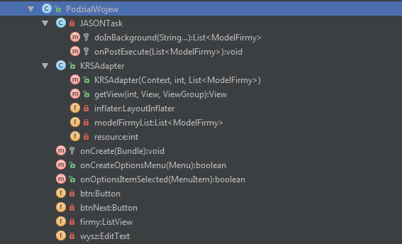
Klasa ta zawiera nastêpuj¹ce metody:
• void onCreate(Bundle)
• boolean onCreateOptionsMenu(Menu)
• boolean onOptionsItemSelected(MenuItem)
Oraz pola:
• Button btn - przycisk s³u¿¹cy do wyœwietlenia firm w danym województwie
• EditText wysz - pole pobieraj¹ce tekst od u¿ytkownika
• ListView firmy - lista firm
Klasa zawiera nastêpuj¹ce podklasy:
• JSONTask - odpowiada za pobieranie danych firmy
• KRSAdapter - odpowiada za wyœwietlenie danych firmy
4.5 Klasa Wyszukiwarka

Klasa ta zawiera nastêpuj¹ce metody:
• void onCreate(Bundle)
• boolean onCreateOptionsMenu(Menu)
• boolean onOptionsItemSelected(MenuItem)
Oraz pola:
• Button btn - przycisk s³u¿¹cy do wyœwietlenia firm podanej nazwie
• Button btnK - przycisk s³u¿¹cy do wyœwietlenia firmy o podanym numerze KRS
• EditText wysz - pole pobieraj¹ce tekst od u¿ytkownika
• ListView firmy - lista firm
Klasa zawiera nastêpuj¹ce podklasy:
• JSONTask - odpowiada za pobieranie danych firmy
• KRSAdapter - odpowiada za wyœwietlenie danych firmy
4.6 Klasa ModelFirmy
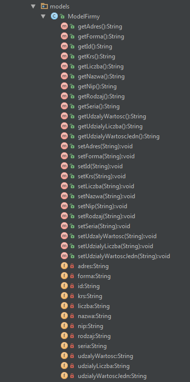
Klasa ta zawiera nastêpuj¹ce metody:
• String get() - pobiera dane
• void set(String) - ustawia dane